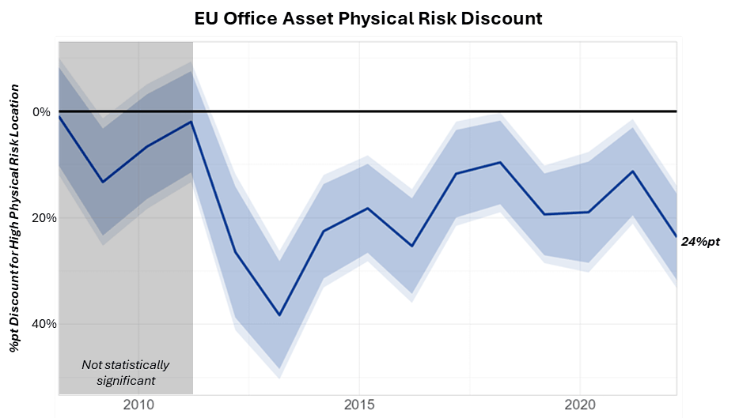
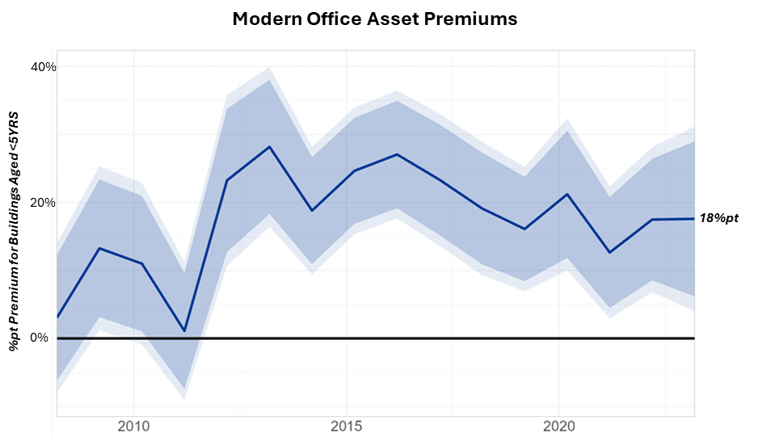

Research Review: ECB Study Quantifies Climate Risk Discounts in CRE
From Research to Reality: Climate Risk Now Has a Formal Price Tag
The concept of stranded assets in commercial real estate has long been debated. But new research from the European Central Bank (ECB) brings hard evidence to the table: climate risk is now financially material, and the market is pricing it in [1].
In one of the most comprehensive datasets yet compiled on climate-related pricing, the ECB has analysed euro area office transactions from 2007 through 2023 [2]. The findings offer a clear signal to market participants that both physical and transition risks are moving from abstract exposure to quantifiable financial cost.
Physical Risk Discounts Are No Longer Theoretical
The clearest evidence of climate risk internalization comes from properties exposed to physical threats such as heat stress and sea-level rise. Today, office assets in high physical-risk zones trade at discounts of up to 24 percentage points. The gap has widened steadily over 16 years - no longer a hypothesis, but a measured outcome.

Transition Risk Has Become a Liquidity Divider
Not all climate-related risks come from rising seas or hotter summers. A quieter but increasingly consequential force is transition risk - the financial exposure created by efforts to shift toward a low-carbon economy.
In the context of CRE, transition risk typically stems from changing building regulations, evolving energy performance standards, and future requirements to retrofit or decarbonise assets. Older buildings that are inefficient or non-compliant may face unexpected costs, regulatory delays, or limited access to financing. These uncertainties are beginning to affect how easily such properties can trade, if at all.
Since 2018, transaction volumes for buildings over 10 years old have steadily declined (even in core markets) indicating a growing aversion to assets exposed to retrofit and compliance risks. This drop in liquidity suggests that investors are growing wary of assets that could become liabilities in a stricter policy environment. In contrast, newer and more efficient stock is seeing increased activity, reflecting its perceived readiness for regulatory and operational transitions ahead.
![Transaction share by building age shows a clear decline for older stock starting in 2017, reflecting growing investor hesitation toward assets exposed to retrofit and regulatory risks. The persistence of a low transaction share for older assets from 2020 to 2023 is particularly notable, given the severe constraints on new supply during this period due to Covid-19 disruptions and the adoption of work-from-home policies. This indicates that, despite limited availability of new buildings, investor demand for older stock remained subdued.](../../img/posts/902edb29.png)
Newer Assets Are Pulling Ahead
Buildings constructed within the last 5 years are enjoying a steadily rising premium. This preference appears rooted in investor appetite for assets that are either already compliant with modern regulatory frameworks or inherently less exposed to retrofit risk. The premium for such assets has increased by 18 percentage points over the study period.

A Systemic Shift in Asset Viability
Together, these findings point to an evolving market logic. Real estate assets are no longer assessed solely on location, lease, and design. Climate alignment is becoming a fourth pillar. The market is gradually separating assets that are prepared for the transition from those that are increasingly seen as risky or obsolete.
The effects are visible in pricing, liquidity, and investor behaviour. They are likely to intensify as climate regulations become more binding and operational carbon constraints tighten across Europe.
“Valuations are no longer blind to climate risk. The repricing has begun, and its trajectory is unlikely to reverse.” - European Central Bank (Working Paper Series) [1]
The Road Ahead for Capital in Real Estate
If climate risk is now a financial variable, capital will adjust accordingly. The most forward-looking institutions are already realigning their portfolios around assets that can withstand both environmental shocks and regulatory tightening. In this emerging landscape, green buildings are not simply symbolic. They represent risk-adjusted positions on policy certainty, operational resilience, and long-term liquidity.
The ECB’s findings suggest that markets are capable of absorbing climate information and responding in measurable ways. The open question is whether stakeholders across the value chain (i.e. investors, lenders, policymakers, and occupiers) will act with the speed and coherence needed to reshape the trajectory of capital deployment.
Future Signals
This ECB research marks a meaningful turning point in the evolution of climate-aware finance. It offers clear evidence that climate risk is no longer speculative or external. It has become a priced-in determinant of asset viability.
As CRE markets adapt, the challenge is not only to manage risk but also to contend with the uneven pace at which that risk is acknowledged. In that unevenness lies both exposure and opportunity. Institutions that respond early and with intent may not simply protect capital, they may help define the new contours of value in a climate-aligned market.
- European Central Bank. "Pricing or panicking? Commercial real estate markets and climate change". May 2025 ↩
- Data comprised of 24,912 transaction records from the MSCI RCA dataset, focused on large-scale euro area CRE office deals (>€10MM). The ECB applied statistical filtering and assessed price, physical risk, and transition risk - making this one of the most comprehensive datasets used to date in European CRE climate risk research. ↩